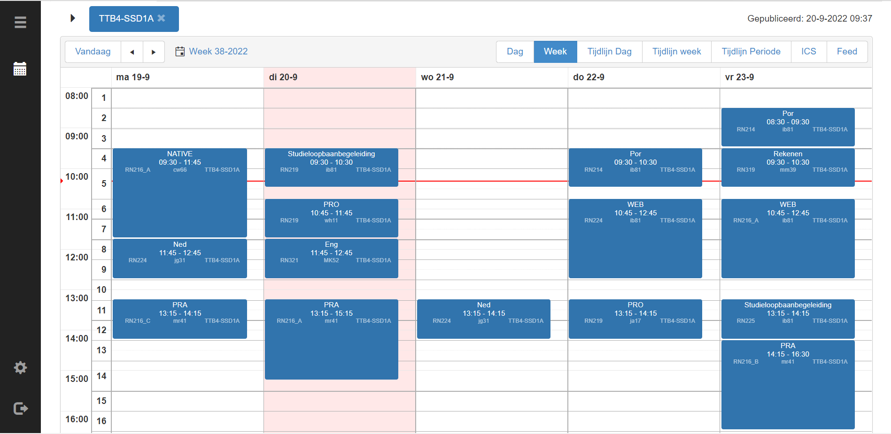

Leerling
Louinardo Holzken
Indeling Blokken

Rooster
Vakanties
Mening
Ik vind de opleiding geweldig en heb het hier super naar mijn zin! Vooral het vak Web-Development is mijn lievlingsvak en een echte aanrader! Je leert er van alles over het maken van een webapplicatie. Ook zijn de andere vakken heel erg leuk om te doen zoals, NATIVE. Bij NATIVE maken we heel erg veel Windows-applicaties. Ik vind alleen de generieken vakken zoals, Engels en Nederlands minder interessant en leuk en zijn niet de leukste dingen op de opleiding. De sfeer op de opleiding is heel erg fijn en ook zijn de docenten top!
Huiswerk
Huiswerk maak je altijd af! Eens per week krijg je een opdracht van een vak een zogenaamde weekcheck. Waar je dus een applicatie moet maken als oefening! Het huiswerk verschilt per hoeveelheid per vak.
Leraren

Docenten Jan, Kees en Katja